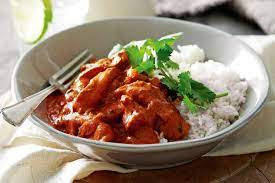

Butter Chicken

Recipe for an easy Butter Chicken meal
This Indian dish as a nice and simple one you can make at home, which is delicious too!
As you can see by the theme, you don't have to be an amazing cook to make this either.
Butter chicken good for kids and adults alike so choose the amount of seasoning/spice you need.
This dish is a tribute to my wife as she is quite fond of butter chicken,
especially when she was pregnant. Couldn't get enough of it I tell you.
Ingredients
- 1 cup butter, divided
- 1 onion, minced
- 1 tablespoon minced garlic
- 1 (15 ounce) can tomato sauce
- 3 cups heavy cream
- 2 teaspoons salt
- 1 teaspoon cayenne pepper
- 1 teaspoon garam masala
- 1 1/2 pounds skinless, boneless chicken breast, cut into bite-sized chunks
- 2 tablespoons vegetable oil
- 2 tablespoons tandoori masala
Cooking Steps
- Preheat the oven to 375 degrees F (190 degrees C).
- Melt 2 tablespoons butter in a skillet over medium heat. Stir in onion and garlic,
and cook slowly until the onion caramelizes to a dark brown, about 15 minutes.
- Meanwhile, combine cream, tomato sauce, remaining butter,
salt, cayenne pepper, and garam masala in a saucepan over medium-high heat;
bring to a simmer. Reduce heat to medium-low, cover, and simmer,
stirring occasionally, for 30 minutes. Stir in caramelized onions.
- While the sauce is simmering, toss chicken with vegetable oil until coated.
Season with tandoori masala and spread out onto a baking sheet.
- Bake chicken in the preheated oven until no longer pink in the center,
about 12 minutes.
- Add cooked chicken to the sauce and simmer for 5 minutes before serving.
Source of recipe